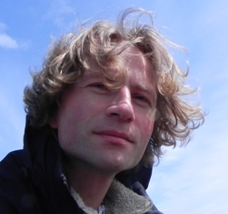

31st International Conference on
ICT Systems Security and Privacy Protection - IFIP SEC 2016
May 30th till June 1st, 2016, Ghent, Belgium
|
31st International Conference on
ICT Systems Security and Privacy Protection - IFIP SEC 2016
May 30th till June 1st, 2016, Ghent, Belgium
|
Keynote SpeakersDaniel Le Métayer: The risk-based approach to privacy: prospects and challenges
Daniel Le Métayer is Research Director at Inria and coordinator of the Inria Project Lab CAPPRIS
(“Collaborative Action for the Protection of Privacy Rights in the Information Society”). The general
goal of CAPPRIS is to foster the collaboration between research groups involved in privacy in France
and the interaction between the computer science, law and social sciences communities in this area.
Daniel Le Métayer previously was the head of the LICIT ("Legal Issues in Communication and Information
Technologies") group within Inria. From 2000 to 2006, he worked for Trusted Logic, a leading company in
security and open middleware for embedded systems. Daniel Le Métayer’s main research interest is the
interplay between technology and law especially with respect to privacy protection (privacy risk analysis,
privacy by design, accountability, etc.).
Abstract. Considering that data cannot be easily classified as personal or non-personal, or as sensitive or non-sensitive, it has been argued that is counterproductive to adopt a binary approach in privacy regulations because it can lead both to inadequate protection of data subjects in certain situations and inacceptable burden for industry for certain types of treatments. One possible way forward is to follow a more progressive, nuanced approach based on a rigorous analysis of the potential risks associated with data processing. Risk analysis is a common approach in computer security but it has received less attention so far in the context of privacy, which raises specific challenges. The keynote will address this issue and discuss the virtues and limitations of privacy risk analysis as well as further work needed in this area. Herbert Bos: Crazy Time: Exploiting Software Without Bugs

Herbert Bos is a professor of Systems and Network Security at
Vrije Universiteit Amsterdam in the Netherlands. He obtained his Ph.D. from Cambridge University Computer
Laboratory (UK). Coming from a systems background, he drifted into security a few years ago and never left.
He is very proud of his (former) students, three of whom have won the Roger Needham Ph.D. Award for best Ph.D.
thesis in systems in Europe.
Abstract. In this talk I will look at new types of vulnerabilties that may have disastrous consequences, but for which it is difficult to point at any particular bug in the software stack. In particular, I will discuss how Google allows attackers that compromise your PC to also own your phone (thereby killing SMS-based two-factor authentication), and a brand new attack on Windows-based systems that allows an attacker to completely pwn the latest Microsoft Edge browser with all defenses up, while not using a single software bug. The goal of this talk is to show that any sufficiently advanced attack is indistinguishable from magic. Kristian Beckman AwardBart Preneel: The Post-Snowden Threat Landscape
Bart Preneel is a full professor at the KU Leuven;
he heads the COSIC research group, that is a member of the iMinds Security Department.
The COSIC research group currently has 70 members, including 5 professors, 20 postdoctoral researchers,
and more than 40 PhD students. He was visiting professor at five universities in Europe and scientific
advisor at Philips Research. He has authored more than 400 scientific publications and is inventor of 5 patents.
He has graduated more than 50 PhD students. His main research interests are cryptography, information security and privacy.
Bart Preneel has participated to about 40 EU projects, for seven of these as coordinator.
He has coordinated the Network of Excellence ECRYPT 2004-2012 (250 researchers) and is coordinating ECRYPT-CSA and
the Marie-Curie ITN ECRYPT.NET. He has served as panel member, vice-chair and chair for the European Research Council and
has been vice-president and president of the IACR (International Association for Cryptologic Research).
He is a member of the Permanent Stakeholders group of ENISA (European Network and Information Security Agency),
of the Academia Europaea, and of the Belgian Privacy Commission (subcommittee national register).
He has been invited speaker at more than 120 conferences in 40 countries. In 2013 he testified in the European
Parliament for the LIBE Committee Inquiry on Electronic Mass Surveillance of EU Citizens. He received the 2014
RSA Award for Excellence in the Field of Mathematics and in 2015 he was nominated fellow of the IACR.
In 2016 he was invited to deliver the IACR Distinguished lecture.
Abstract. In June 2013 Edward Snowden leaked a large collection of documents that describe the capabilities and technologies of the NSA and its allies. Even to security experts the scale, nature and impact of some of the techniques revealed was surprising. In addition to “active defense” technologies and a focus on subverting end systems, the documents also reveal a systematic attempt to undermine cryptographic systems. A major consequence is the increased awareness of the public at large of the existence of highly intrusive mass surveillance techniques. There has also been some impact in the business world, including a growing interest in companies that (claim to) develop end-to-end secure solutions. There is no doubt that large nation states and organized crime have carefully studied the techniques and are exploring which ones they can use for their own benefit. But after more than two years, there is little progress in legal or governance measures to address some of the excesses by increasing accountability. Moreover, the security research community seems to have been slow to respond to the new threat landscape. In this talk we analyze these threats and speculate how they could be countered. |
Sponsors
|